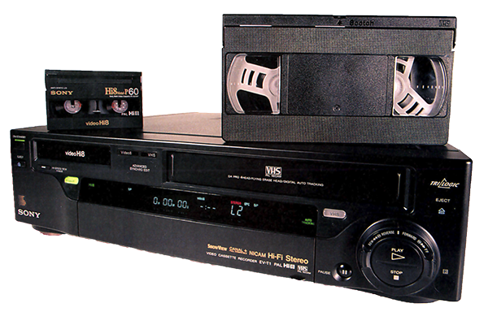
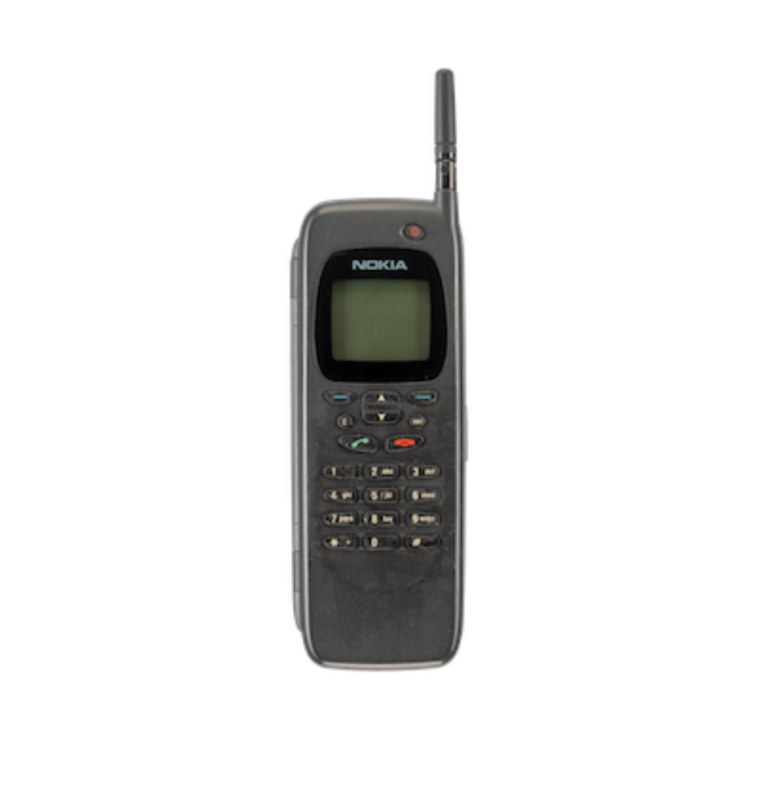
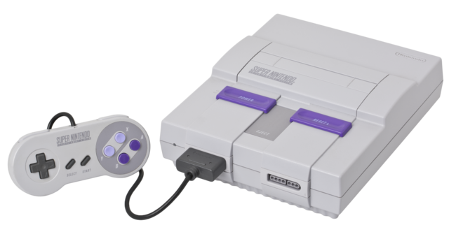
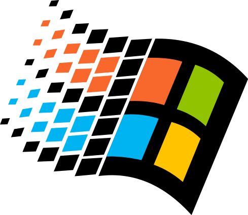
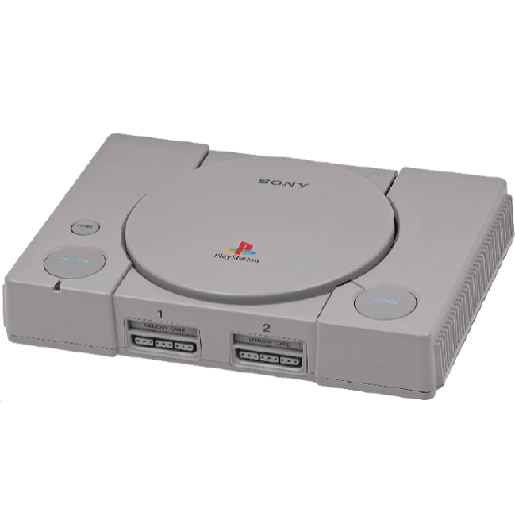

LA CASSETTE VHS :
La cassette VHS est sortie en 1976 mais c'est seulement dans les années 90
que celle-ci s'impose dans les foyers et connaît son heure de gloire.
Avec un magnétoscope il était possible d'enregistrer les programmes télévisés.
Son succès est dû au cinéma et à sa facilité d'utilisation.

NOKIA 8110 :
Sortie en 1996, comme le téléphone le plus petit et le plus léger
de la marque Nokia. Son surnom, le "téléphone banane" lui vient de sa courbure
lorsqu'il était ouvert. Il sera surtout connu pour être le téléphone utilisé par Néo
dans le film Matrix, en 1999.

LA SUPER NINTENDO :
Afin de rivaliser avec l'arrivée de la PC-Engine de NEC et la Mega Drive de Sega,
Nintendo lance sa 1ère console 16 bits : la Super Nintendo (NES). Sortie en 1992 en Europe
à un prix de 982 francs soit 149€ à l'époque (aujourd'hui son prix serait de 236€ avec l'inflation).
La NES connaitra un succès fou avec 49 millions de ventes et plus de 20 millions
de ventes pour son jeu phare "Super Mario World".

WINDOWS 95 :
Windows 95 est un système d'exploitation lancé par Microsoft en 1995 comme son nom l'indique.
Il est le premier OS Windows 32 bits doté d'un menu démarrer. Microsoft en fera la promotion avec
la chanson "Start Me Up" des Rolling Stones. En seulement 2 ans il s'empare de 69,4% des parts du marché.

LE DVD:
Créé en collaboration par Sony; Philips; Toshiba et Panasonic en fin 1995, le DVD a pour but
de remplacer la cassette VHS. Un remplacement qui se fera rapidement grâce à son
utilisation plus simple et sa capacité de stockage 7 fois plus grande (4,7 Go) que la VHS.

PLAYSTATION 1 :
La Playstation 1 n'aurait jamais dû sortir puisqu'à la base la console est un projet de Nintendo: projet durant lequel Nintendo
reposait sur l'aide de Sony afin de travailler sur un lecteur de CD-ROM. Mais à la suite d'un problème sur les
droits de licence, Nintendo décide d'aller travailler avec Philips. Sony de son côté, profite
du savoir-faire qu'il a acquis grâce à Nintendo afin de lancer sa propre console en usant justement de ses nouvelles connaissances.
Nintendo tentera de poursuivre Sony en justice ainsi que de déposer une interdiction de vente de la Playstation mais sans succès.
La Playstation sortira en 1995 et totalisera 104 millions de ventes.